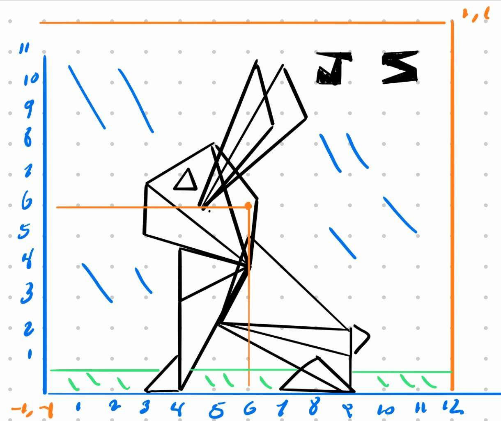

Drawing Mode
Shape Color
Red Green Blue
Shape Size Circle Segments

The reference image used to create the rabbit art
For the Awesomeness! part of the rubric I created a boucing ball that users can spawn in by pressing the "Bouncing Ball" button on the webpage. This ball can be removed by clicking clear canvas. Users can also change the color of the ball by adjusting the rgb color sliders.